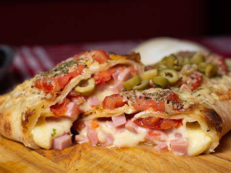

Receta para preparar un Calzone napolitano

"El Calzone napolitano es mayormente conocido como una pizza rellena"
Lista de ingredientes:
- 1 bollo de masa tradicional para pizza
- 100g de mozzarella
- 100g de jamon cocido
- 1 morron rojo asado y pelado
- 100g de champiñones al natural
- queso rallado
- aji molido
- 1 huevo
- Albahaca
Preparacion:
- Estirar el bollo de masa en el molde que tenga en casa.
- Mezclar bienla mozzarella, el jamon, el morron, los champiñones y el queso rallado.
- Mezclarlo con un huevo y condimentar con albahaca y aji molido.
- Colocar el relleno en una de las mitades de la masa, doblar la masa y dejar reposar 15 minutos.
- pintar con aceite el calzone y cocinar en horno con fuego mediano por 20 minutos, hasta que este bien dorado.
¡Es momento de servilo y disfrutarlo en familia!
Encuentre mas manera de preparar un Calzone a la napolitana
Recetas Argentinas
Receta tipo italiana
Volver al inicio